Setting 3, because it has the lowest training error, indicating the best fit to thetraining data.
Setting 2, because it has the lowest validation error and a relatively lowtraining error, indicating a good generalization.
Setting 1, because it has the highest number of iterations and therefore likelyto be more stable.
Setting 4, because it uses the highest learning rate and converges the fastest.
Q4MCQ3 marks
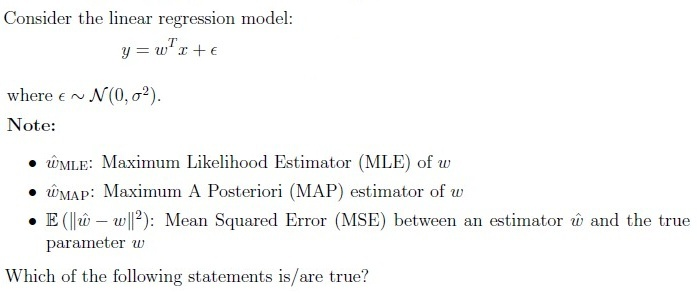
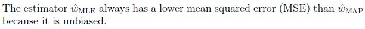
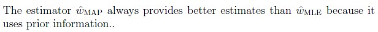
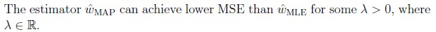
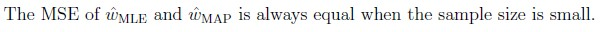
Q5MCQ2 marks
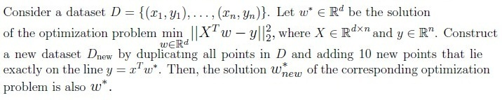
TRUE
FALSE
Q6MCQ1 mark
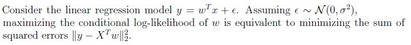
TRUE
FALSE
Q7MSQ2 marksselect all that apply
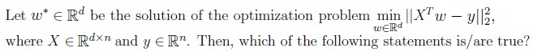
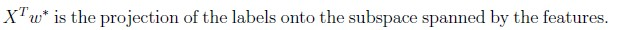
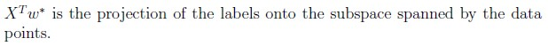
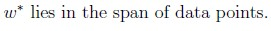
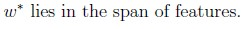
Q8MSQ2 marksselect all that apply
Which among the following are true?
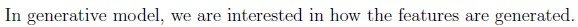
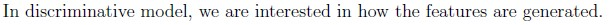
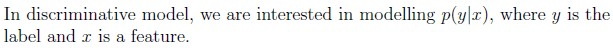
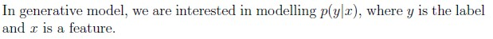
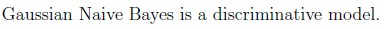
Q9SA3 marks
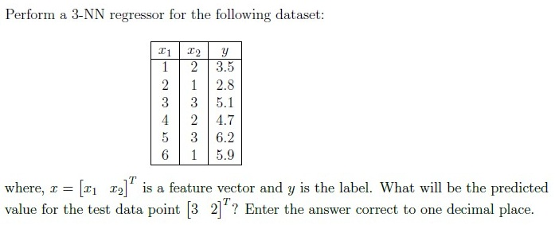
Comprehension passage - the questions below it refer to this
Based on the above data, answer the given subquestions.
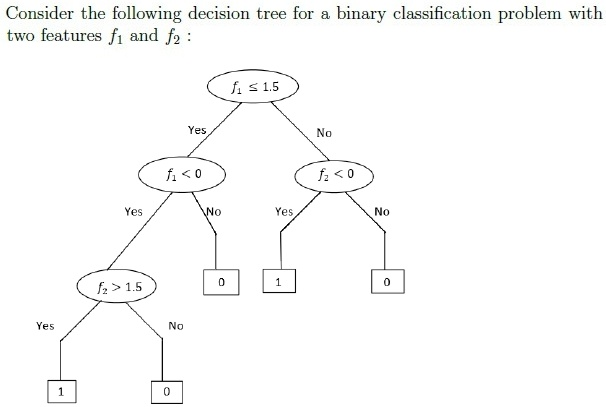
Q10MCQ3 marks
Which among the following represents the correct decision boundary for the decision tree?
Note: Here + represents the label 1 and − represents the label 0.
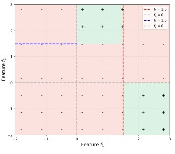
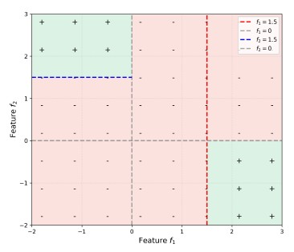
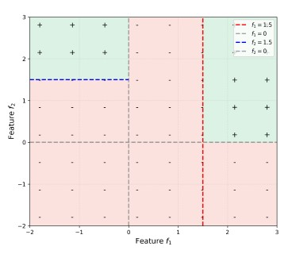
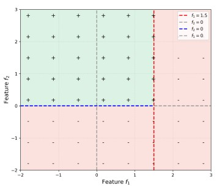
Q11SA2 marks
What will be the prediction for the new datapoint (2, 2)?
Comprehension passage - the questions below it refer to this
Based on the above data, answer the given subquestions.
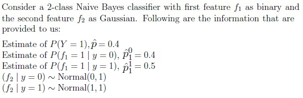
Q12SA2 marks
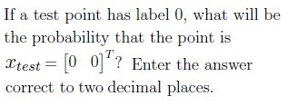
Q13SA3 marks
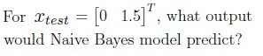
Comprehension passage - the questions below it refer to this
Suppose you want to build a decision tree to help diagnose a certain disease based on patient data. You have a dataset of 1000 patients labeled as either “positive” or “negative”. Here, positive represents patients with the disease and negative represents no disease. One of the feature used to diagnose is headache. Below is the breakdown of the patients reporting headache: Headache present: 300 positive, 50 negative Headache not present: 100 positive, 550 negative
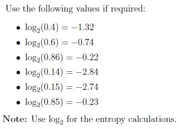
Suppose you want to build a decision tree to help diagnose a certain disease based on patient data. You have a dataset of 1000 patients labeled as either “positive” or “negative”. Here, positive represents patients with the disease and negative represents no disease. One of the feature used to diagnose is headache. Below is the breakdown of the patients reporting headache: Headache present: 300 positive, 50 negative Headache not present: 100 positive, 550 negative
Based on the above data, answer the given subquestions.
Q14SA3 marks
What is the entropy of the root node? Enter the answer correct to two decimal places.
Q15SA4 marks
What is the information gain for choosing the feature “headache” for splitting at the root node? Enter the answer correct to two decimal places.
Auto-generated summary from the source site. Handy as a checklist; the lessons above explain each idea from scratch.
Summary of Core Topics, Concepts, Principles, and Equations
1. Maximum Likelihood Estimation (MLE)
Concept: MLE is a method of estimating the parameters of a statistical model by maximizing the likelihood function.
Equation: For a given model yi∣xi∼N(log(wxi),1), the MLE estimate w^MLE is found by maximizing the likelihood function.
2. Maximum A Posteriori (MAP) Estimation
Concept: MAP estimation is a Bayesian approach to estimate parameters by finding the mode of the posterior distribution.
Equation: For linear regression with Gaussian priors, the MAP estimator is given by:
w^MAP=argwmin{∥y−XTw∥2+λ∥w∥2}
where λ=γ2σ2.
3. Linear Regression and Projections
Concept: Linear regression models the relationship between a dependent variable and one or more independent variables.
Equation: The solution to the linear regression problem minw∈Rd∥XTw−y∥22 is given by the normal equations.
Projection: XTw∗ is the projection of the labels onto the subspace spanned by the features.
4. Generative and Discriminative Models
Concept:
Generative Models: Model the joint probability distribution p(x,y).
Discriminative Models: Model the conditional probability distribution p(y∣x).
Examples:
Generative Model: Gaussian Naive Bayes.
Discriminative Model: Logistic Regression.
5. Decision Trees
Concept: Decision trees are a non-parametric supervised learning method used for classification and regression.
Entropy and Information Gain:
Entropy: Measures the impurity or disorder in a dataset.
Information Gain: Measures the reduction in entropy achieved by partitioning the data based on a given feature.
6. Naive Bayes Classifier
Concept: Naive Bayes is a probabilistic classifier based on Bayes' theorem with an assumption of independence between features.
Equation: For a binary feature f1 and a Gaussian feature f2, the posterior probability is given by:
P(y∣f1,f2)∝P(y)P(f1∣y)P(f2∣y)
7. k-Nearest Neighbors (k-NN)
Concept: k-NN is a non-parametric method used for classification and regression.
Equation: For a test point x, the predicted value is the average (for regression) or the majority vote (for classification) of the k-nearest neighbors.